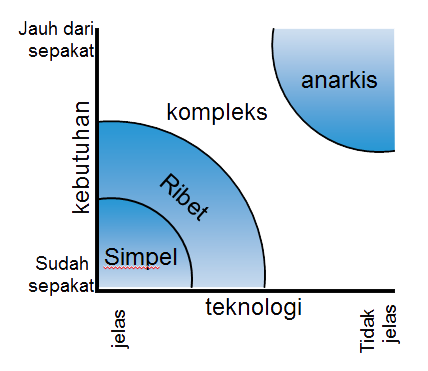
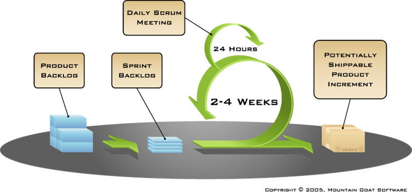
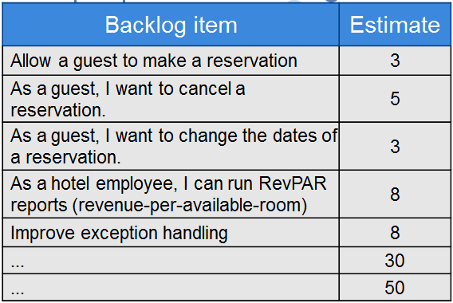
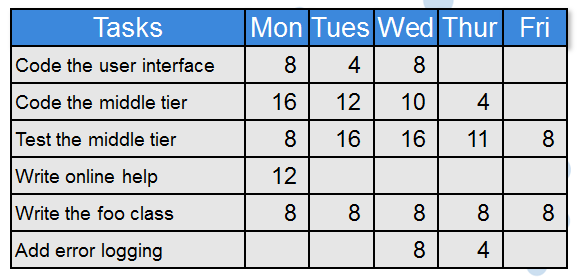
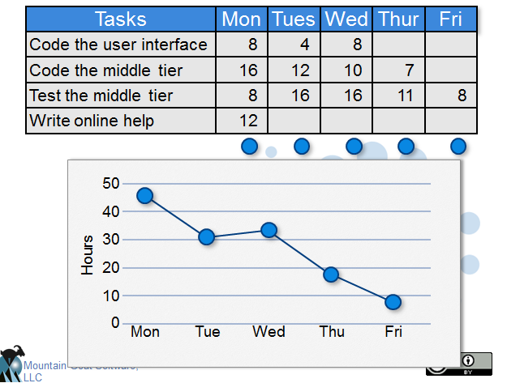

<!DOCTYPE html><html><head><meta charset="utf-8"><meta name="viewport" content="width=device-width, initial-scale=1, maximum-scale=1"><title>TKPPL | SCRUM</title><link rel="stylesheet" type="text/css" href="bower_components/prism/themes/prism.css"><link rel="stylesheet" type="text/css" href="bower_components/todc-bootstrap-main/dist/css/bootstrap.min.css"><link rel="stylesheet" type="text/css" href="styles/main-presentation.css"></head><body></body></html><nav role="navigation" class="navbar navbar-default"><div class="container"><div class="navbar-header"><button type="button" data-toggle="collapse" data-target="presentation-chooser" class="navbar-toggle"><span class="sr-only"></span><span class="icon-bar"></span><span class="icon-bar"></span><span class="icon-bar"></span></button><a href="index.html" class="navbar-brand">Teknologi Kolaborasi</a></div><div id="presentation-chooser" class="collapse navbar-collapse"><ul class="nav navbar-nav"><li class="dropdown"><a data-toggle="dropdown" href="#" class="dropdown-toggle">Pilih Presentasi <b class="caret"></b></a><ul class="dropdown-menu"><li><a href="1-Introduction.html">Pengenalan Kuliah</a></li><li><a href="2-TeknologiKolaborasi.html">Teknologi Kolaborasi</a></li><li><a href="3-PresentasiDenganBespokeJS.html">Presentasi dengan Bespoke.JS</a></li><li><a href="4-SCRUM.html">SCRUM</a></li><li><a href="5-UserStories.html">User Stories</a></li><li><a href="6-Trello.html">Trello dan Bug Reporting</a></li><li><a href="7-PengenalanKontrolVersi.html">Kontrol Versi</a></li><li><a href="8-DasarKontrolVersi.html">Dasar Kontrol Versi</a></li><li><a href="9-Commit.html">Commit</a></li><li><a href="10-LogDanHistory.html">Log dan History</a></li><li><a href="6-TugasBeSpoke.html">Tugas Be Spoke</a></li><li><a href="11-TimeMachine.html">Time Machine</a></li><li><a href="12-PushDanPull.html">Push dan Pull</a></li><li><a href="13-Branching.html">Branching (Percabangan)</a></li><li><a href="14-GitFlow.html">GitFlow Workflow</a></li></ul></li></ul></div></div></nav><article id="presentation"><section><h1>SCRUM</h1><p>Teknologi Kolaborasi Pengembangan Perangkat Lunak</p></section><section><h2 class="bullet">SCRUM sebagai Metodologi Pengembangan</h2><hr><ul><li>karena metodologi pengembangan klasik (waterfall) gagal</li></ul></section><section><h2 class="bullet">Tentang SCRUM</h2><hr><ol><li>sebuah proses pengembangan yang terfokus dalam menghasilkan produk bernilai tinggi secepat mungkin.</li><li>memungkinkan kita untuk dapat selalu melihat hasil pengembangan.</li><li>pengembangan dilakukan dengan sistem prioritas yang ditentukan oleh pengguna sistem.</li></ol></section><section><h2 class="bullet">Karakteristik SCRUM</h2><hr><ul><li>Tim bergerak secara mandiri</li><li>Produk dikembangkan dalam serangkaian "sprint"</li><li>Kebutuhan pengguna disimpan dalam "backlog", yang merupakan daftar kebutuhan sederhana</li><li>Tidak ada praktek pengembangan tertentu yang dianggap wajib berjalan</li><li>Salah satu proses "Agile"</li></ul></section><section><h2 class="bullet">Agile Manifesto</h2><hr><ul class="manifesto"><li><span class="agile-yes">Individual &amp; Interaction</span> &gt; <span class="agile-no">Process &amp; Tools</span></li><li><span class="agile-yes">Working Software</span> &gt; <span class="agile-no">Comprehensive Documentation</span></li><li><span class="agile-yes">Customer Collaboration</span> &gt; <span class="agile-no">Contract Negotiation</span></li><li><span class="agile-yes">Responding to Change</span> &gt; <span class="agile-no">Following a Plan</span></li></ul></section><section><h2>Tingkat "Noise" sebuah Proyek</h2><hr><p>Sumber: Strategic Management and Organizational Dynamics 
oleh Ralph Stacey in Agile Software Development with Scrum 
oleh Ken Schwaber and Mike Beedle.
</p></section><section><h2>Proses Perjalanan SCRUM</h2><hr></section><section><h2 class="bullet">Sprint</h2><hr><ul><li>biasanya dijalankan selama 2-4 minggu</li><li>disarankan untuk memiliki durasi konstan</li><li>produk dikembangkan (dari analisis sampai testing) selama sprint</li><li><strong>tidak boleh ada perubahan kebutuhan</strong> selama sprint</li></ul></section><section><h2 class="bullet">Pemain dalam tim SCRUM</h2><hr><ul><li>Pemilik Produk (Product Owner)</li><li>Tim Pengembang (Development Team)</li><li>Scrum Master</li></ul></section><section><h2 class="bullet">Product Owner</h2><hr><ul><li>Mendefinisikan fitur produk</li><li>Menentukan waktu rilis dan apa yang akan dirilis</li><li>Bertanggung jawab dalam kebergunaan produk (materi maupun tidak)</li><li>Menentukan prioritas sebuah fitur, apakah sesuai keinginan pasar atau tidak</li><li>Mengganti prioritas pada tiap iterasi (jika diperlukan)</li><li>Menerima atau menolak hasil kerja</li></ul></section><section><h2 class="bullet">SCRUM Master</h2><hr><ul><li>Memastikan SCRUM dijalankan dengan benar</li><li>Melenyapkan gangguan terhadap proyek</li><li>Memastikan tim dapat bekerja dengan baik dan produktif</li><li>Membuka jalan kerja sama antara semua anggota tim</li><li>Melindungi tim dari gangguan luar proyek</li></ul></section><section><h2 class="bullet">Development Team</h2><hr><ul><li>Berisi 5-9 orang</li><li>Bersifat mandiri: tidak ada "peran khusus" anggota tim</li><li>Usahakan tidak ada pergantian peran ketika sprint sedang berjalan</li></ul></section><section><h2 class="bullet">Kegiatan dalam SCRUM</h2><hr><ul><li>Perencanaan Sprint (Sprint Planning)</li><li>Rapat Harian (Daily SCRUM Meeting)</li><li>Ulasan Sprint (Sprint Review)</li><li>Sprint Retrospective</li></ul></section><section><h2 class="bullet">Sprint Planning</h2><hr><ul><li>Tim menentukan untuk mengerjakan salah satu <i>item</i> dari backlog</li><li>Sprint backlog dibuat</li><li>Sprint backlog berisi detil pekerjaan untuk menyelesaikan product backlog</li><li>Sprint backlog berisi estimasi waktu pengerjaan, sedetil mungkin</li><li>Sprint backlog dikerjakan bersama-sama oleh SCRUM Master dan tim</li></ul></section><section><h2 class="bullet">Daily SCRUM</h2><hr><ul><li>Harian, 15 menit, sambil berdiri</li><li><strong>Bukan</strong> untuk menyelesaikan masalah</li><li>Semua anggota tim ikut</li></ul></section><section><h2 class="bullet">Daily SCRUM</h2><hr><p>Semua orang wajib menjawab pertanyaan berikut:</p><ol><li>Kemarin mengerjakan apa?</li><li>Apa yang akan dikerjakan hari ini?</li><li>Ada masalah dalam pengerjaan tugas?</li></ol><p>Pertanyaan ini <strong>bukan</strong> laporan ke SCRUM Master, melainkan
bentuk komitmen ke tim
</p></section><section><h2 class="bullet">Sprint Review</h2><hr><ul><li>tim menjelaskan apa yang dicapai selama sprint</li><li>biasanya dalam bentuk demo produk</li><li>informal, tanpa Power Point</li><li>semua orang boleh berpartisipasi</li></ul></section><section><h2 class="bullet">Sprint Retrospective</h2><hr><ul><li>dilakukan di akhir sprint</li><li>membahas apa yang dijalankan dengan benar dan salah selama sprint</li><li>bentuk refleksi agar sprint selanjutnya lebih baik lagi</li><li>diikuti oleh semua tim</li><li>bahas apa yang: harus berhenti, mulai, dan tetap dilakukan selama sprint</li></ul></section><section><h2 class="bullet">Perangkat SCRUM</h2><hr><ul><li>Product Backlog</li><li>Sprint Backlog</li><li>Burntdown Chart</li></ul></section><section><h2 class="bullet">Product Backlog</h2><hr><ul><li>kebutuhan produk</li><li>harus memberikan nilai untuk pengguna</li><li>prioritas ditentukan oleh Product Owner</li><li>prioritas diperbaharui setiap awal sprint</li></ul></section><section><h2>Contoh Product Backlog</h2></section><section><h2 class="bullet">Sprint Backlog</h2><hr><ul><li>detil pekerjaan untuk menyelesaikan Product Backlog</li><li>tiap anggota tim menentukan sendiri apa yang mau dikerjakan</li><li>estimasi waktu pengerjaan diperbaharui tiap hari</li><li>boleh ditambah, ganti, ataupun hapus</li></ul></section><section><h2>Contoh Sprint Backlog</h2></section><section><h2>Sprint Burntdown Chart</h2></section></article><script src="bower_components/bespoke.js/dist/bespoke.min.js"></script><script src="bower_components/bespoke-bullets/dist/bespoke-bullets.min.js"></script><script src="bower_components/bespoke-scale/dist/bespoke-scale.min.js"></script><script src="bower_components/bespoke-hash/dist/bespoke-hash.min.js"></script><script src="bower_components/bespoke-progress/dist/bespoke-progress.min.js"></script><script src="bower_components/bespoke-state/dist/bespoke-state.min.js"></script><script src="bower_components/prism/prism.js"></script><script src="bower_components/prism/components/prism-bash.min.js"></script><script src="scripts/main.js"></script><script src="bower_components/jquery/jquery.min.js"></script><script src="bower_components/todc-bootstrap-main/dist/js/bootstrap.min.js"></script>